SIGGRAPH Asia 2026 under submission
Promptable Visual Geometry Transformers for 4D Metric Human-Scene Reconstruction
Boao Shi, Qiao Feng, Yiming Huang, Lingjie Liu
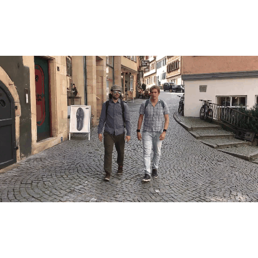
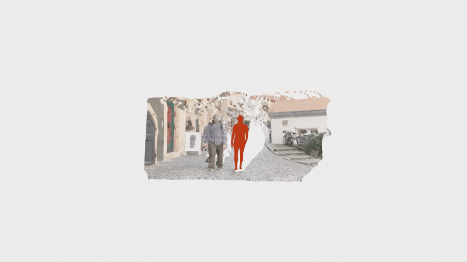
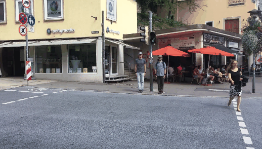
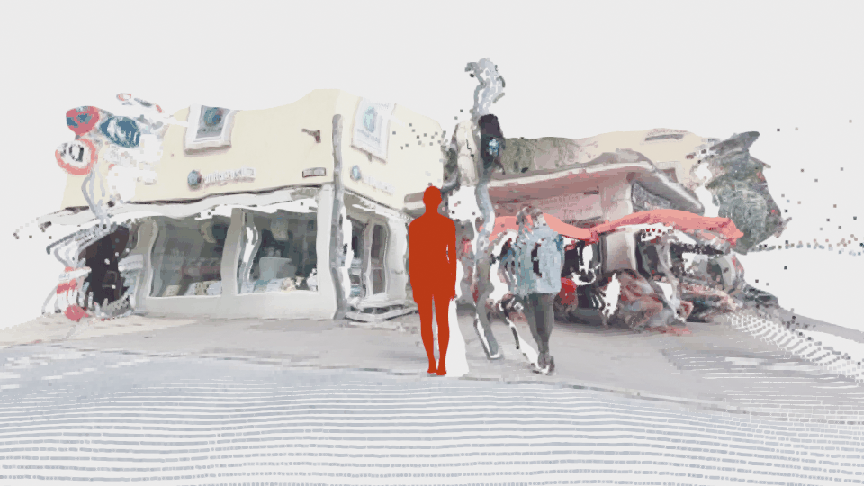
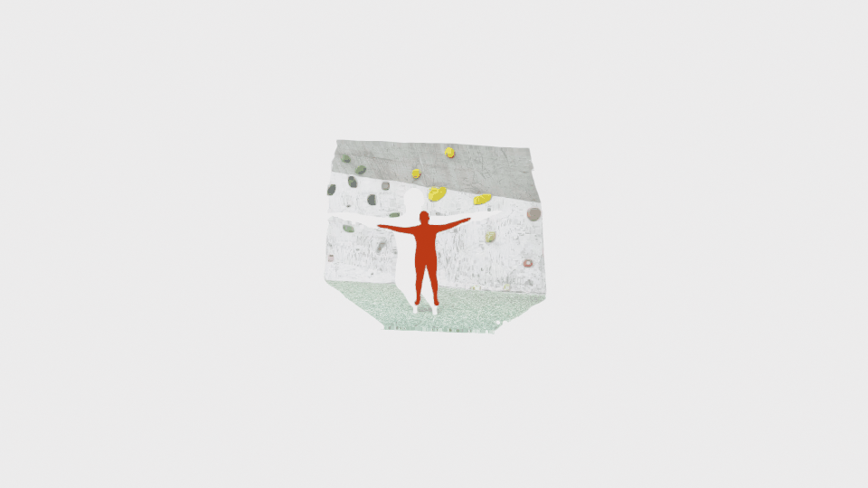
Welcome to my homepage. I am currently a research assistant at UPenn GRASP Lab and an undergraduate majoring in Computer Science at The University of Hong Kong.
Previously, I worked with InfoBodied Lab, supervised by Prof. Yang Yanchao, and with Tao Yu at XLang Lab.
Research
SIGGRAPH Asia 2026 under submission
Boao Shi, Qiao Feng, Yiming Huang, Lingjie Liu





EMNLP 2024
Hongjin Su, Shuyang Jiang, Yuhang Lai, Boao Shi, Haoyuan Wu, Che Liu, Qian Liu, Tao Yu
Projects
Robotics
A self balanced biped robot operating under real time system with lidar and camera,
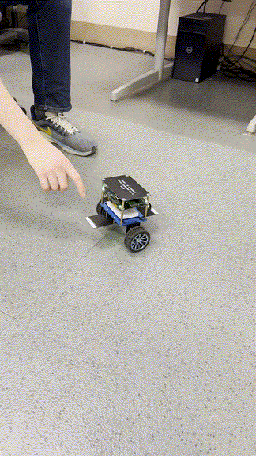
Motion Capture
A system for collecting human motion and object interaction data in diverse real-world indoor scenes. We use real-sense and orbbec camera to scan and reconstruct scenes and record human interacting video. Using ROSEFusion to reconstruct scene, Fusion 4D to reconstruct human motion, and scene reconstruction Using foundation model to detect and segment human and objects, VLM-based automatic annotation to generate interaction labels. Train diffusion-based model to denoise and complete human motion and interaction data. Using physical simulation to enhance the physical plausibility of the captured human motion and interaction data.
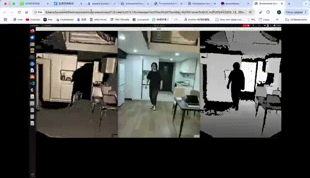
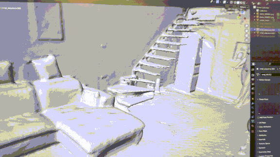
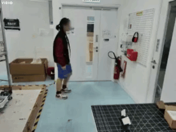
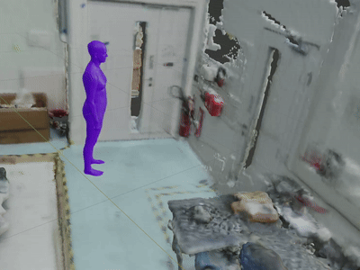
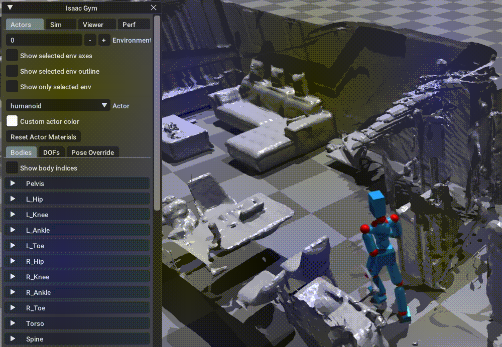
Robotics
A real-time robotic targeting system built with online tracking and Kalman-filter-based state estimation.
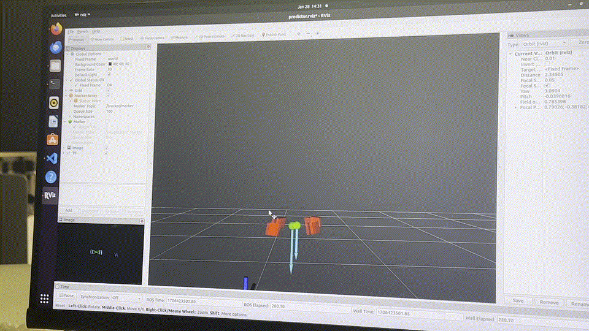
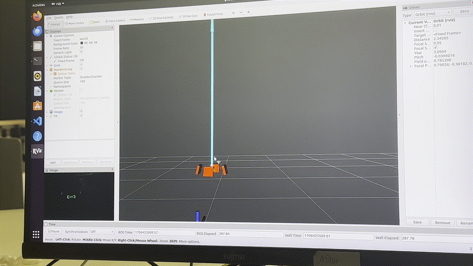